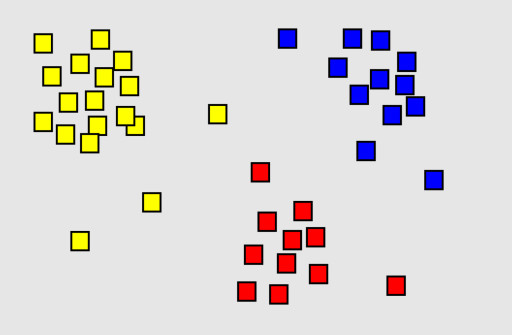

Clustering은..
클러스터링(clustering)은 데이터 마이닝과 머신러닝에서 사용되는 비지도 학습(unsupervised learning) 방법 중 하나입니다. 클러스터링의 목적은 주어진 데이터셋에서 유사한 특성을 가진 데이터 포인트들을 그룹화하는 것입니다. 이렇게 그룹화된 데이터 포인트들의 집합을 클러스터(cluster)라고 합니다. 클러스터링은 고객 세분화, 이미지 분류, 문서 군집화, 이상치 탐지, 추천 시스템 등 다양한 분야에서 활용됩니다. 클러스터링을 통해 데이터의 구조와 패턴을 발견하고, 새로운 인사이트를 얻거나 의사 결정을 돕는 데 도움이 됩니다. 주요 기법은 다음과 같습니다:
- 중심 기반 클러스터링(Centroid based clustering): 각 클러스터의 중심을 정의하고, 각 데이터 포인트를 가장 가까운 중심에 할당하는 방식으로 클러스터를 형성합니다. 중심과 데이터 포인트 간 거리의 제곱합을 최소화하는 방식으로 반복적으로 최적화합니다. K-means clustering
- DBSCAN (Density-Based Spatial Clustering of Applications with Noise): 데이터 포인트의 밀도에 기반한 클러스터링 방법으로, 밀도가 높은 영역을 클러스터로 인식하고, 밀도가 낮은 영역은 노이즈로 처리합니다. 이 방법은 클러스터의 개수를 미리 지정할 필요가 없으며, 노이즈에 대한 처리가 가능합니다. DBSCAN
- 계층적 클러스터링(Hierarchical clustering): 데이터 포인트 간의 거리나 유사도를 기반으로 가장 가까운 데이터 포인트나 클러스터를 병합하는 방식으로 진행됩니다. 이 방법은 덴드로그램(dendrogram)이라는 나무 형태의 구조로 클러스터링 과정을 시각화할 수 있습니다. Hierarchical Clustering
- 스펙트럼 클러스터링(Spectral clustering): 데이터의 유사도 행렬을 사용하여 그래프를 구성하고, 그래프의 스펙트럼(고유값과 고유벡터)을 기반으로 클러스터를 형성합니다. 이 방법은 비선형 구조를 가진 데이터에 적합하며, 클러스터의 모양이 복잡한 경우에도 잘 작동합니다.
데이터 포인트 간의 거리는..
- 유클리디언 거리 (Euclidean Distance): 두 점 사이의 직선 거리를 계산하는 가장 기본적인 거리 메트릭입니다. 이 거리는 기하학적 공간에서 두 점 사이의 거리를 직관적으로 이해하기 쉽습니다. 유클리디안 거리는 L2 노름(norm)으로도 알려져 있습니다.
- 맨하탄 거리 (Manhattan Distance): 각 축에 따라 수직으로 이동하여 두 점 사이의 거리를 계산하는 방법으로, L1 노름(norm)으로도 알려져 있습니다. 이 거리 메트릭은 그리드 기반의 데이터에서 종종 사용됩니다.
- 코사인 유사도 (Cosine Similarity): 두 벡터 간의 코사인 각도를 사용하여 유사성을 측정하는 방법입니다. 값의 범위는 -1에서 1까지이며, 1에 가까울수록 벡터 간의 방향이 유사함을 나타냅니다. 이 메트릭은 텍스트 문서와 같이 고차원 데이터에서 유용하게 사용됩니다.
- Mahalanobis distance(마할라노비스 거리): 다차원 공간에서 두 데이터 포인트 간의 거리를 측정하는 방법 중 하나입니다. 이 거리 측정 방법은 각 차원의 스케일(scale)과 상호간의 공분산(covariance)을 고려하여 거리를 계산합니다. 즉, 각 차원의 중요성을 고려하여 거리를 계산하기 때문에 특이한 데이터나 이상치(outlier)에 덜 민감하다는 장점이 있습니다.